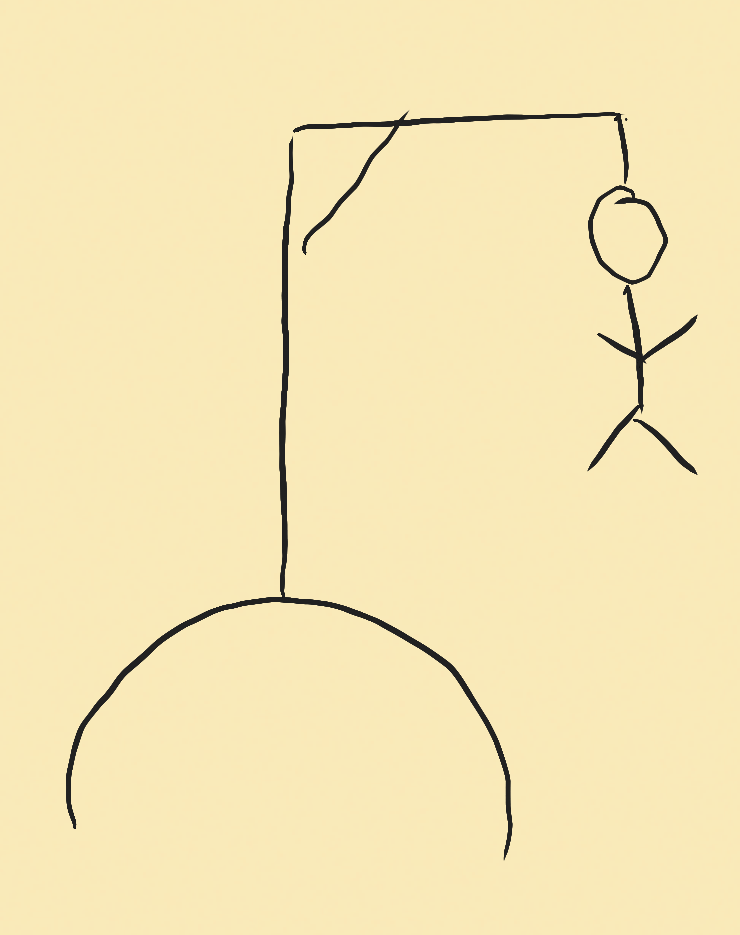

Öffentliche Hinrichtungen zu besuchen war ein beliebter Zeitvertreib im alten Westen. Deshalb wird heute der Klassiker "Galgenmännchen" gespielt.
Ein*e Spieler*in denkt sich ein Wort aus und macht stellvertretend für jeden Buchstaben einen Strich auf ein Blatt. Nur der 1. Buchstabe des Worts wird aufgeschrieben.
Die anderen Spieler*innen können nun Buchstaben sagen, welche im Wort vorkommen könnten. Stimmt der Buchstabe, so setzt die Person die das Wort erstellte, den Buchstaben an alle entsprechenden Stellen (Linien). Kommt der Buchstabe nicht vor, wird der Galgen bzw. das Strichmännchen um einen Strich erweitert.
Natürlich dürfen auch ganze Wörter geraten werden. Ist es korrekt, ist die Runde beendet. Stimmt es nicht, wird der Galgen weiter aufgebaut.
Keine fremdsprachigen Wörter (ausser Sachen im alltäglichen Gebrauch wie "Handy", "Velo")
Bei korrekt geratenen Buchstaben müssen alle Stellen, wo er vorkommt im Wort ausgefüllt werden
Keine Kraftausdrücke / beleidigende Ausdrücke
Immer nur ein Wort (z.B. "Wilder Westen" geht nicht)
Falsch geratene Buchstaben werden notiert, dass sie nicht nochmals genannt werden
Umlaute ä ö und ü werden durch ae, oe resp. ue geschrieben
Der Galgen/Strichmännchen besteht aus 11 Teilen/Strichen (Hügel, vertikaler Balken, horizontaler Balken, Querbalken, Seil, Kopf, Körper, 2 Arme, 2 Beine)
Mit englischen Wörtern zum Raten
Falsch geratene Buchstaben werden nicht notiert
Die Galgen-Zeichnung besteht aus mehr/weniger Teilen (einfacher oder schwieriger)
Wörter dürfen nur mit einem bestimmtem Oberthema zu tun haben